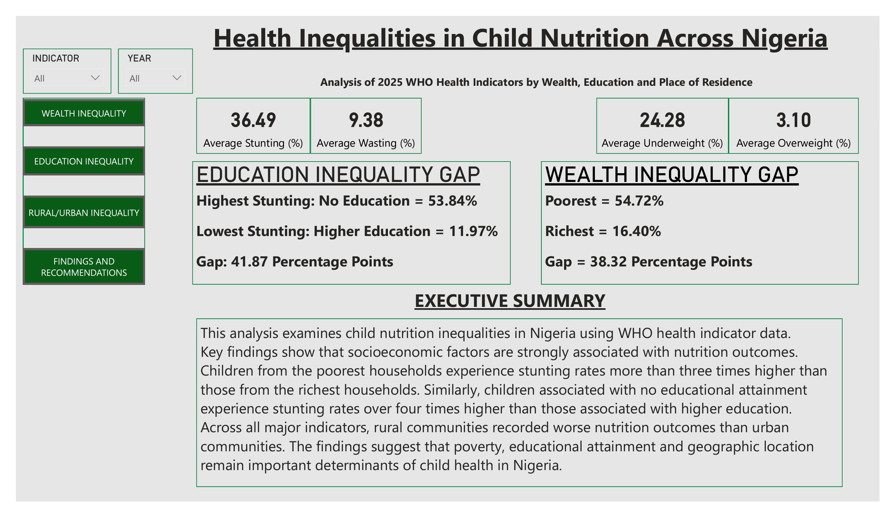
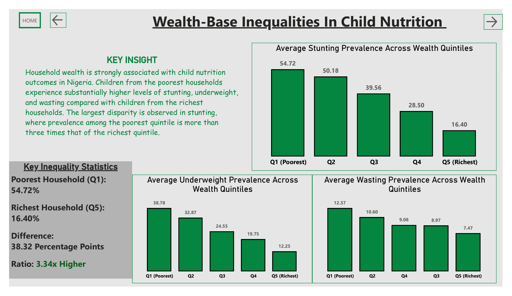
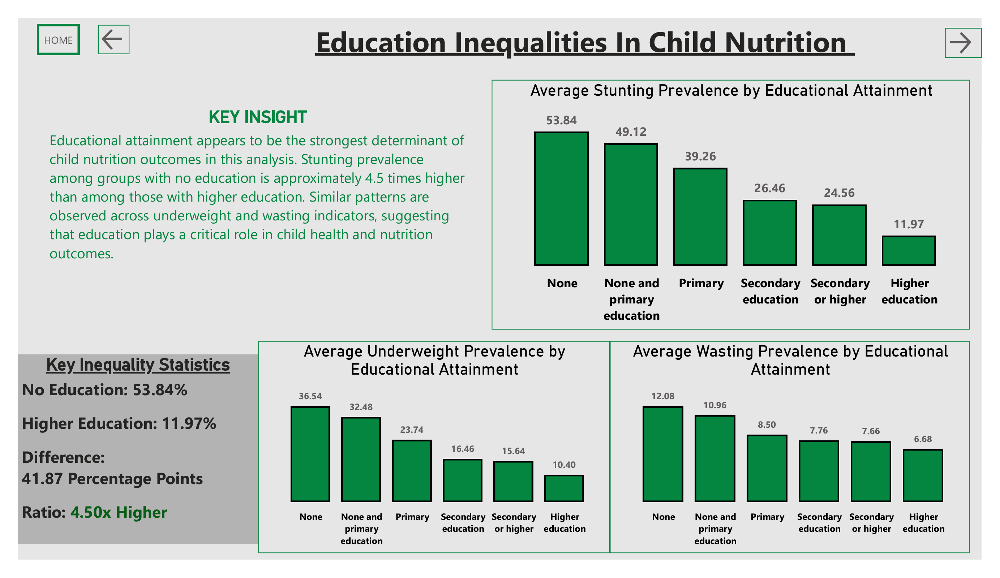
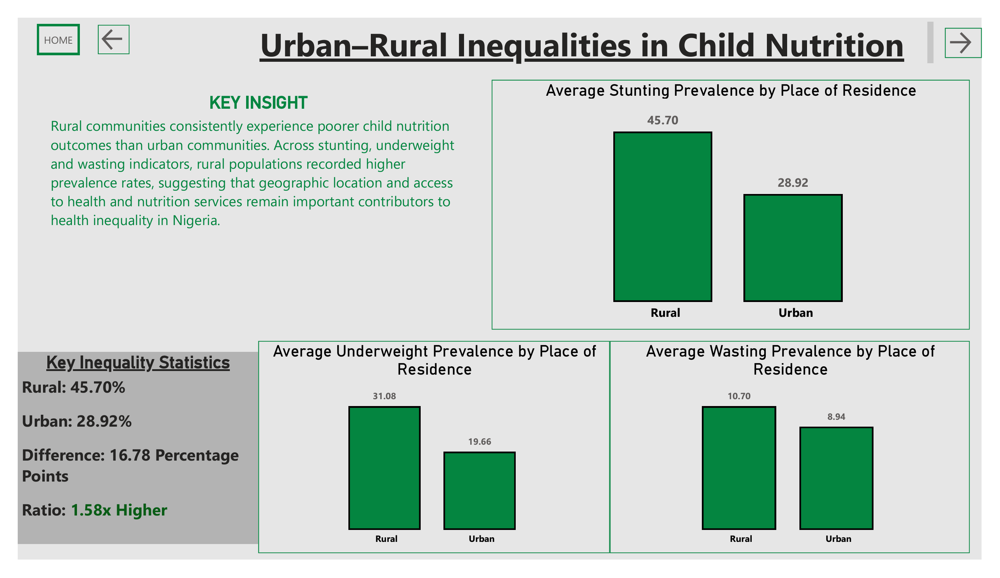

An end-to-end data analytics project analyzing child nutrition inequalities in Nigeria using WHO Global Health Observatory data. The analysis explores how wealth, educational attainment, and place of residence are associated with childhood nutrition outcomes.
Child malnutrition remains a major public health challenge in Nigeria. However, national averages can hide important differences between socioeconomic and demographic groups.
This analysis focuses on three major child nutrition indicators — stunting, underweight, and wasting — and examines how outcomes vary across wealth quintiles, education levels, and rural versus urban residence.
The goal was to move beyond simply reporting national nutrition figures and identify where the largest inequalities occur.
WHO Global Health Observatory (GHO)
Nigeria, 2018–2022
25,909
Stunting, Underweight, Wasting
Excel, SQL Server, Power BI & DAX
GitHub
I followed an end-to-end workflow, starting with a raw WHO dataset and finishing with an interactive analytical dashboard and a set of evidence-based recommendations.
The analysis revealed clear inequalities in child nutrition outcomes across wealth, educational attainment, and place of residence.
Children from the poorest households experienced stunting prevalence more than three times higher than children from the richest households.
Educational attainment showed the strongest association with child nutrition outcomes in this analysis.
Children associated with no education experienced approximately 4.5× higher stunting prevalence than those associated with higher education.
Rural communities consistently recorded worse nutrition outcomes than urban communities across all major indicators.
Stunting emerged as the most severe nutrition challenge, followed by underweight and wasting.
The difference in average stunting prevalence between children associated with no education and those associated with higher education.
The analysis was presented through a Power BI dashboard designed to make the inequalities easier to compare and communicate. Each page focuses on a different dimension of child nutrition inequality.
A high-level overview of the major nutrition indicators, inequality gaps, and key findings from the analysis.

This page examines how stunting, underweight, and wasting vary across household wealth quintiles, highlighting the disparity between the poorest and richest households.

This analysis compares child nutrition outcomes across different levels of educational attainment and highlights the substantial gap in stunting prevalence.

This page compares nutrition outcomes between rural and urban communities and highlights the persistent differences across the major indicators.

Based on the observed inequalities, the analysis points toward several areas that could support more targeted interventions.
I wrote a behind-the-scenes article covering the project, including the process of working through the data and building the analysis.
Read the Full Medium Article →